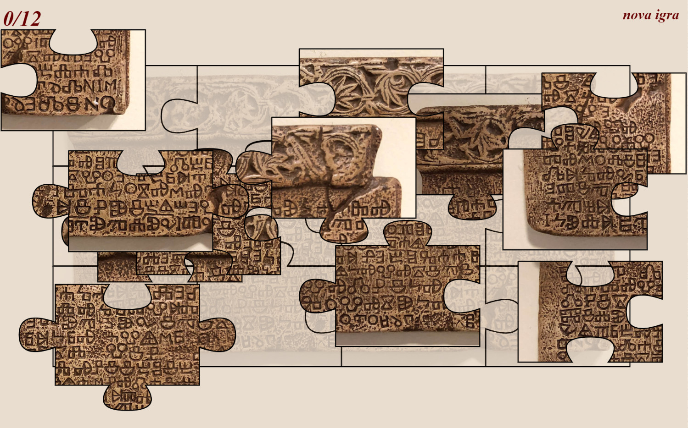

Bašćanska ploča jedan je od najvrednijih spomenika rane hrvatske pismenosti, a datira se u doba oko 1100. godine. Izvorno je bila natpis na pregradnoj ploči (pluteus) pregrade koja je dijelila redovnički kor od crkvene lađe u crkvi svete Lucije u Jurandvoru (Baška Draga na otoku Krku). Od 1934. smještena je u zgradi Hrvatske akademije znanosti i umjetnosti.
Tekst Bašćanske ploče sadržava:
Bašćanska ploča kao arheološki spomenik
Bašćanska ploča kameni je spomenik (isklesan bijeli vapnenac) visok 99,5 cm, širok 199 cm, debeo 7.5 – 9 cm i težak oko 800 kg.
Izvorno je Ploča bila lijevi plutej (pregradna ploča) na kamenoj crkvenoj pregradi (septum, canceli). Ta je pregrada prostorno dijelila kor pred oltarom, koji je bio određen za redovnike, od crkvene lađe, određene za vjernike. Oblikom i proporcijama Ploča odgovara plutejima predromaničkoga i romaničkoga razdoblja na našemu obalnom pojasu (Istra, otoci, Dalmacija). Ornamentalni motiv lozice što teče duž istaknute bordure gornjim rubom Ploče javlja se u jednakoj stilizaciji na ukrašenim dijelovima crkvene arhitekture na našoj obali u kasnome 11. i u 12. stoljeću.
Datiranje
Iz podataka teksta Bašćanske ploče zaključujemo da je ona bila klesana poslije smrti kralja Zvonimira (1089. g.) jer opat Držiha o Zvonimirovoj donaciji izvješćuje kao o događaju koji se zbio u prošlosti („v dni svoje”). Doznajemo da je crkva zidana u vrijeme uprave drugoga opata, Dobrovita, u vrijeme kneza Kosmata, koji je vladao svom Krajinom. To upućuje na vrijeme prije mletačke dominacije Krkom godine 1116. ili prije serije poznatih krčkih knezova, mletačkih vazala (poslije zvanih Frankopani), od kojih prvi počinje vladati između 1118. i 1130. godine. I sama crkva svete Lucije tipološki pripada razdoblju naše rane romanike.
Sve to navodi na datiranje Bašćanske ploče pod sam kraj 11. ili na početak 12. stoljeća, dakle oko 1100. godine.
Bašćanska ploča kao jezični spomenik
Pismo kojim je klesana Bašćanska ploča pripada prijelaznomu stupnju iz starije, oble glagoljice u uglatu. Usporedno s glagoljičnima javlja se i nekoliko latiničnih i ćiriličnih slova (I, M, N, O, T, V), a jednaka je pojava zabilježena i na drugim spomenicima hrvatske glagoljice 11. i 12. stoljeća. Na jednome mjestu bilježi se znak za prednji nazal ę (svoję), koji u to doba ima još samo grafijsku vrijednost.
U tekstu Bašćanske ploče zrcali se čakavski fonološki sustav, a u gramatici i leksiku uočljivo je miješanje i preklapanje čakavskoga i crkvenoslavenskoga idioma.
Tekst Bašćanske ploče kao književno djelo
Istraživači
pritisni sliku da odigraš slagalicu
© Institut za hrvatski jezik i jezikoslovlje